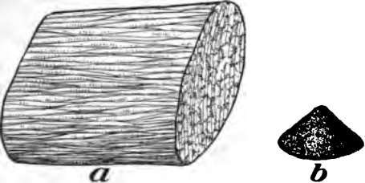
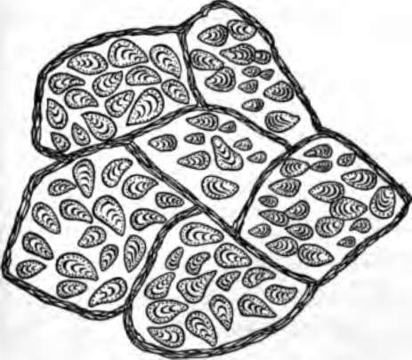
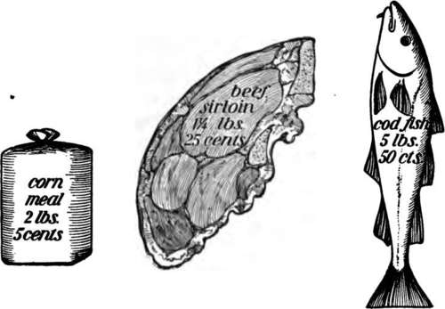
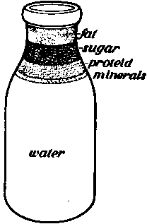

Chapter IV. Food For The Body
Description
This section is from the book "The Human Body And Health", by Alvin Davison. Also available from Amazon: The Human Body and Health.
Chapter IV. Food For The Body
Need Of Food
The body consists of about twelve gallons of water; twelve pounds of mineral matter such as table salt, potash, lime and iron; twelve pounds of fat; and twenty-four pounds of proteid. Proteid forms a portion of every cell in the body. A common form of proteid is albumin like the white of egg. Since parts of the body made of these substances are dying daily and passing away, such food must be taken as will restore the loss.
Food is also required for fuel to be burned to keep the body warm, and to supply energy to make it move and enable the organs to do their work. A steam locomotive cannot pull cars without burning coal. For the same reason, the arm or leg cannot be moved without something being burned in the body.
Fig. 17. b, the mineral matter such as lime, salt and potash left from burning the piece of meat, a.
Kinds Of Food
The two general groups of foods are the flesh foods and the fuel foods. The flesh foods are the proteids. These form a large part of lean meat, of dried peas and beans, and of wheat flour. They help build up bone, blood, and flesh.
Fig. 18. A tiny slice of potato to show the starch grains. Much enlarged.
The fuel foods consist of sugars, starches, and fats. These are used to give energy for work and to keep the body warm. The sugar used on the table is made largely from beets and from sugar cane. Milk sugar is present in milk, and fruit sugar makes the ripe fruit sweet. Starch is found mainly in such vege-tables as corn, rice, wheat, and potatoes, where it appears in the form of little grains (Fig. 18).
Fats make up most of the fat meat, form a large part of the cream of milk and about nine tenths of butter. The fat of beef is called tallow and that from pork is known as lard. A fat which is liquid at room temperature is spoken of as oil. Cottonseed oil, castor oil and olive oil are derived from plants.
Quantity Of Food Required
Careful experiments lately made have shown that most people eat too much. No matter how much food is eaten, only that part of it required by the body for replacing worn-out material and furnishing fuel will be used. The extra amount eaten is likely to cause sickness by clogging the organs or by helping bacteria to develop in the food canal and to give off poisons. These produce headache and other kinds of illness called indigestion or dyspepsia.
Cost Of Food
Many foods contain much water and have a pleasant taste but there is very little solid matter present to form flesh or to supply fuel to the body. Water melons, cucumbers, oysters, lobsters, bananas, cabbages and apples are expensive foods as they contain little nourishment.
Fig. 19. Each of these three foods will give the body the same nourishment, but the fish costs ten times as much as the corn meal.
Wheat flour, corn meal, and potatoes are cheap foods. They are rich in flesh and fuel making power. Ten cents' worth of corn meal will furnish as much nourishment as two dollars worth of oysters. A dime spent for stewing beef will secure more food value than twenty-five cents spent for sirloin steak.
How To Live Cheaply
Good food can be secured for a small amount of money if the housekeeper is careful to purchase what contains the most nourishment for the least cost. The daily cost of food for a family of five persons living largely upon wheat bread, corn meal mush, beef stew, small dried beans, potatoes, oatmeal and two quarts of milk, with a little of the cheapest fruit and green vegetables in season, need not exceed seventy-five cents.
Meats
The eating of large quantities of meat is responsible for much ill health. Intemperance in the use of meat and alcohol is one of the important causes of disease of the kidneys. Those who live much indoors should not use pork or fried meats more than once or twice weekly. Baked fish and roasted or boiled beef or mutton should be eaten only once daily by those taking little exercise.
The same nourishment supplied by meats may be purchased for less money spent for eggs, milk and vegetables. Sirloin, round, and rump steaks are expensive cuts and furnish, but little more nourishment than chuck or brisket costing one third as much (Fig. 23).
Eggs
Eggs contain much substance for the making of flesh and also a considerable amount of fat. They form an excellent food especially for invalids, and children over nine months old They are most easily digested when beaten raw in a glass of milk. Soft-boiled eggs are also easily digested.
Fig. 20. A bottle of milk showing of what it is made. Proteid is the flesh building food.
One dozen eggs furnish about the same amount of nourishment as a pound of beef sirloin.
Milk
The one food of more importance than any other for man's welfare is milk. Seven eighths of it consists of water but the other eighth contains all the elements needed for the body. Anyone can live for years upon milk alone, but for adults it is more useful when taken with other foods.
Milk is easily digested and is, therefore, an excellent food for children and invalids. It contains much mineral matter for making bones and is rich in other substances needed to form flesh and blood. Three or four glasses of milk may be used daily by most children with marked benefit. It should not be swallowed rapidly like water, but taken slowly in sips. When taken cold it may not agree with some persons. It should then be sipped slowly while very hot. In heating it, do not let it boil.
Continue to: